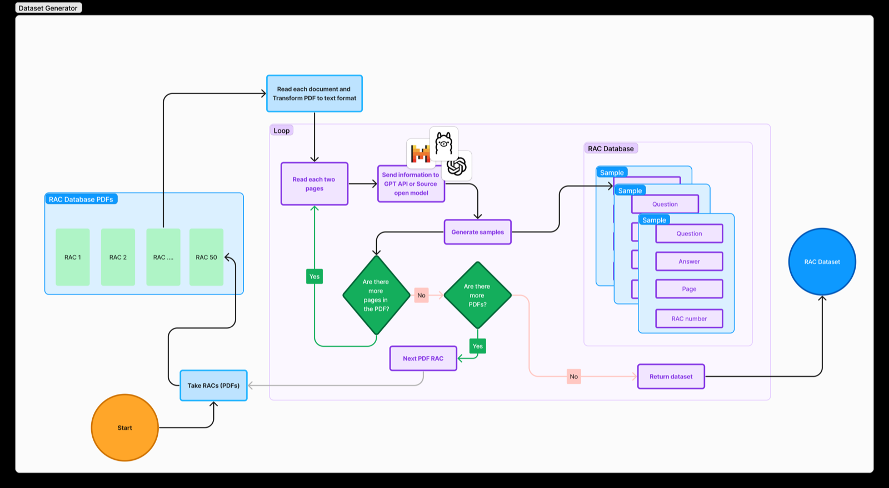
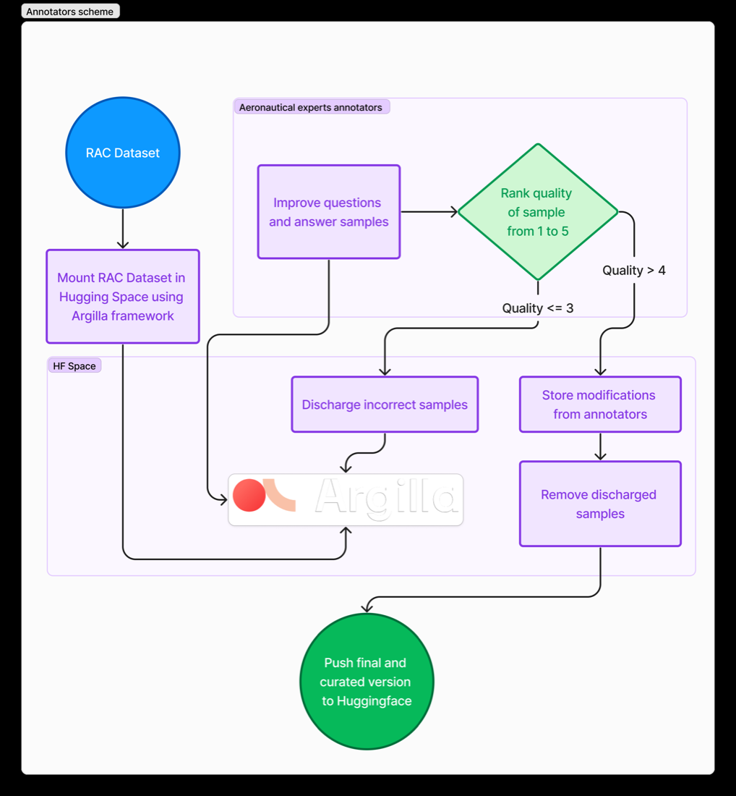

Towards Enhanced RAC Accessibility: Leveraging Datasets and LLMs

Abstract
The Aeronautical Regulations of Colombia (RAC) are long, highly technical and hard to navigate for non-experts. This work explores how large language models can make them more accessible. We build the first RAC database, with 24,478 question–answer pairs labelled by aeronautical experts, and fine-tune LLMs specifically for RAC applications.
We describe dataset assembly, expert-led annotation and model training on Gemma 1.1 2B, using Unsloth for efficient VRAM usage and flash attention to speed up training. The goal is to make the RAC easier to understand for newcomers and to reduce the need for expert consultations in the aviation industry.
Method

- Dataset generation. The RAC PDFs are read page by page and an LLM produces question–answer pairs, each with its RAC reference.
- Expert curation. Aeronautical engineering specialists from Fundación Universitaria Los Libertadores rate every sample from 1 to 5 in Argilla. Samples rated 3 or lower are discarded.
- Fine-tuning. Gemma 2B / 1.1 2B instruct models are trained with PEFT + QLoRA, and later Unsloth, using SFTTrainer. The LoRA weights are merged for deployment.
- Evaluation. Training cost and loss are compared across versions V1–V8, and experts score the answers for each RAC.
Results
Training runtime, loss and compute per model version. V8 (gemma-1.1-2b-it on the fully curated data) was the most optimised model.
| Version | Time (s) | Loss | FLOPs |
|---|---|---|---|
| V8 | 12,607 | 0.194 | 3.94E+14 |
| V7 | 33,262 | 0.194 | 2.51E+15 |
| V6 | 1,977 | 0.243 | 5.01E+15 |
| V5 | 1,779 | 0.076 | 5.18E+15 |
| V4 | 1,833 | 0.092 | 5.06E+15 |
| V3 | 3,987 | 0.071 | 4.99E+15 |
| V2 | 4,239 | 1.241 | 4.95E+15 |
| V1 | 50,973 | 0.6 | 2.29E+15 |
V3–V5 reached a lower loss but gave poorer answers. Later versions improved answer quality and training efficiency.
Expert evaluation of the answers for each RAC.
| RAC | Mean | Median | Tests |
|---|---|---|---|
| 1 | 6.12 | 7 | 100 |
| 2 | 5.8 | 6.5 | 20 |
| 3 | 3.464 | 1 | 56 |
| 5 | 6.34 | 7.5 | 100 |
| General | 5.6 | 7 | 276 |
RACs 1 and 5 score highest. RAC 3 needs further work.
Resources
Citation
If you use the dataset, the models or the code, please cite:
@article{bejarano2024rac,
title = {Towards Enhanced {RAC} Accessibility: Leveraging Datasets and {LLMs}},
author = {Bejarano Sepulveda, Edison Jair and Potes Hector, Nicolai and Pineda Montoya, Santiago and
Rodriguez, Felipe Ivan and Orduy, Jaime Enrique and Rosales Cabezas, Alec and
Traslavi{\~n}a Navarrete, Danny and Madrid Farfan, Sergio},
journal = {arXiv preprint arXiv:2405.08792},
year = {2024}
}